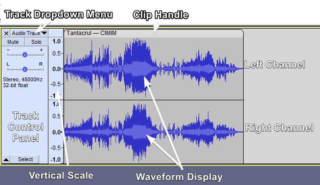
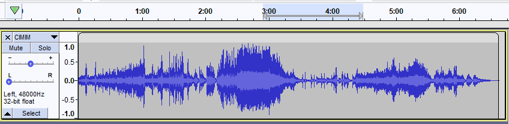

Audio Tracks
- a Track Control Panel with Audio Track Dropdown Menu for changing View Mode and audio properties of that individual track
- a Vertical Scale with units
- a visual representation of the audio waveform.
New tracks are created whenever you import an audio file. The menu command lets you explicitly add a new, empty mono or stereo audio track.
| Not all the images in this page have been updated with the new button that was introduced in 3.2.0 for access to the Real-time Effects Stack. |
Contents
- About Tracks
- Stereo Audio Track
- Single Audio Track (Mono, Left or Right)
- Track Control Panel and Vertical Scale
- Audio Track Dropdown Menu
- Clips
- Show audio track name as overlay
- Splitting and Joining Tracks
- Changing the track display
- Track focus
- Working with Audio Tracks
About Tracks
A track is like one instrument in your symphony, or one voice in your podcast. You can add more tracks, and all of them will be mixed together to create your final output, but during editing you can manipulate each track independently. If you have an interview recorded with two microphones, each one can go in a separate track. If you have background music, that could go in a third track.
A non-empty track contains at least one clip. A clip is a piece of continuous audio, for example a recording or a background song. Clips can be moved along the Timeline so that they play at a different point in time in the mix, as well dragged between tracks. See Audacity Tracks and Clips for details of how clips work within tracks.
Stereo Audio Track
The image below shows the separate components of an Audacity stereo track: the Track Control Panel with Audio Track Dropdown Menu, the Vertical Scale and the Waveform Display itself, typical of a finally edited recording. As per convention, the upper waveform and vertical scale represent the left channel and the lower waveform and vertical scale represent the right channel. The dark blue part of the waveform displays the tallest peak and the light blue part of the waveform displays the average RMS (Root Mean Square) value of the audio, see The waveform colors for more detail.
- 
- To change the default View Mode that all tracks show when created, use Tracks Preferences.
In a stereo track, all editing actions on the track are applied identically to both channels, though some effects may treat each channel differently. For exaample, and by default set the peak amplitude of only the loudest channel then apply the same change in amplitude to the other channel, preserving the balance between channels. Normalize has an option to normalize left and right channels independently to the same amplitude if this is required. See Amplify and Normalize for more details.
Single Audio Track (Mono, Left or Right)
A single audio track has the same components as a stereo track with a single waveform and one vertical scale rather than two. This can be easily seen if using "Split Stereo Track" in the Track Dropdown Menu to split the stereo track into two single tracks. The same menu can make single tracks mono, left or right. Each single track can be separately selected and thus edited independently from other tracks.
- 
Track Control Panel and Vertical Scale
Track Control Panel

The Track Control Panel at the left of the audio track has controls and status indicators for this track. Left-clicking other than on a control performs track selection and move as follows. - Clicking the button selects all this track's audio, deselecting all other tracks.
- Holding Shift while clicking the button selects all this track's audio, keeping already selected tracks selected.
- keyboard: use Up or Down to give the track focus, then Enter to select it; hold Shift then use Up or Down to extend selection into another track. Read keyboard selection for more.
- Click-and-drag moves this track up or down when there are other tracks
- keyboard: choose one of the Move Track commands in Audio Track Dropdown Menu, opened by Shift + M on the currently focused track.
- Reveals the real-time effects stack. For details see Using Realtime Effects on the Audacity Support GitBook.
For details please see Track Control Panel and Vertical Scale.
Vertical Scale

- The Vertical Scale displays amplitude when showing the waveform, or frequency when showing the spectrum or pitch.
- The amplitude scale shown to left is the default linear scale
- 1.0 being the maximum value of positive signals and -1.0 the maximum of negative signals.
- Alternatively you can select a dB scale for the linear view from the context menu of the Vertical Scale.
Audio Track Dropdown Menu
The Audio Track Dropdown Menu is accessed by clicking in the Track Name, by the downward-pointing triangle  in the Track Control Panel.
in the Track Control Panel.
Alternatively, you can access the Track Dropdown Menu on the currently focused audio track by pressing Shift + M.

You can use the Audio Track dropdown menu to manipulate individual mono or stereo tracks:
- Rename a track
- Move a track up or down in the project window
- Set the current type of view for the track
- Select the colorway to be used for a waveform display
- Swap the channels of a stereo track
- Make or split stereo tracks
- Set the current sample rate and sample format for the track.
There is no need to select the track before accessing the dropdown menu.
Clips

Clips live within tracks. You can recognize where a clip starts and ends by the rounded top corners. - The clip-handle drag-bar includes the clip name, the clip body includes the waveform.
- You can move the clip around by its clip-handle.
- You can trim a clip by dragging near the upper corner of its left and right edges. Doing so will hide the waveform that goes beyond it (as opposed to fully deleting it).
- You can rename the track by double clicking in it and then editing the name.
- You can right-click the clip (not the clip-handle) to access more options in a context menu.
- More detailed information on clips can be found in the Audio Tracks and Clips page.
Show audio track name as overlay
This is not on by default but if you go to or Tracks Preferences you can enable this option.
When this is enabled the audio track name is displayed superimposed translucently (thus enabling the waveform to also be visible) at top left of all audio tracks.
The track name is always shown in the Track Control Panel but will be truncated if the name is too long to fit.

Splitting and Joining Tracks
Using the Audio Track Dropdown Menu you can:
- split a stereo track into separate tracks for left and right channels
- split a stereo track into two separate mono tracks
- swap the channels in a stereo track
- join two mono, left or right tracks into one stereo track.
For example, here is a project with two mono tracks:

After selecting "Make Stereo Track" from the Track Dropdown Menu on the upper track we get one stereo track:

For more information please see Splitting and Joining Stereo Tracks.
Changing the track display
Changing the height of the channels in a stereo track
Click and drag in the gray strip between the channels.

To restore a track to default so that each channel is the same size simply double-click in the gray strip between the channels.
Changing the height of a track
Click and drag between the tracks (Esc key can abort that drag).

Arrows at the start of the track
This indicates that there is audio data in the track before the track start.

By default you cannot see such audio that is before zero, but if you turn on Enable scrolling left of zero in Tracks Behaviors Preferences you will be able to scroll to make it visible.
Stem Plots
There is an entry in the Tracks Preferences for Display samples. This setting changes how Waveform and Waveform dB views are displayed. It only affects the appearance of the waveform when you are so far zoomed in that you can see the individual sample dots. At lower zoom levels it makes no difference.
- Stem plot: This is the default setting which draws a vertical line from the track center line to the sample dot, giving a clearer impression of the relative amplitude of the samples. As seen in the images below, when zoomed out close to the minimum for a stem plot, the horizontal distance between sample dots may be more uneven than seen with the connect dots default.
- Connect dots: This is alternative setting yields a waveform where each sample dot is connected to the next sample by a line drawn between them. default.

Waveform (dB) view
The waveform view can be switched to a dB logarithmic view by right-clicking on the track's Vertical Scale and selecting "dB" from the dropdown context menu.

This view shows, more clearly than simple waveform view, that the recording has been made loud enough and fills the display nicely.
Multi-view - Waveform and Spectrogram
It is also possible to work with a Waveform view and a Spectrogram view in the same track.

- Example of a mono audio track with a Multi-view split 50:50 Waveform/Spectrogram
To get a split Multi-view for a track select Multi-view from the track's Track Control Panel dropdown menu.
For details see Multi-view
Track focus
You may have noticed in the images on this page that the tracks have a yellow border around them. This border indicates that this track has focus.
The track that has focus is the track that accepts any command whose name includes "focused track". These commands include commands such as "Close focused track" (Shift + C), "Mute/Unmute focused track" (Shift + U) and "Toggle focused track" (RETURN or Enter, which toggles whether the focused track is selected or not).
The complete list of "focused track" commands can be seen by searching for "focused track" (without quotes) in Keyboard Preferences or by viewing the description of these commands in Keyboard Shortcut Reference.
Track focus is used to select audio and to extend or move the selection region into other tracks using the keyboard.
| Note carefully that a track having focus does not necessarily mean that the current selection is in that track. It is quite possible to have a selection in one track and for another track to have the focus. |
Working with Audio Tracks
For more information on working with audio tracks, see:
- Audacity Tracks and Clips: More detailled information on clips, tracks, and their interactions.
- Selecting Audio: the special characteristics of audio selection and the tools Audacity provides to help you make exactly the selection you need
- Sync-Locked Track Groups: keeping a group of tracks synchronized
- Zooming: seeing what you need to see